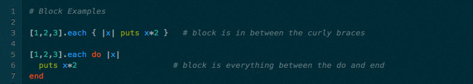
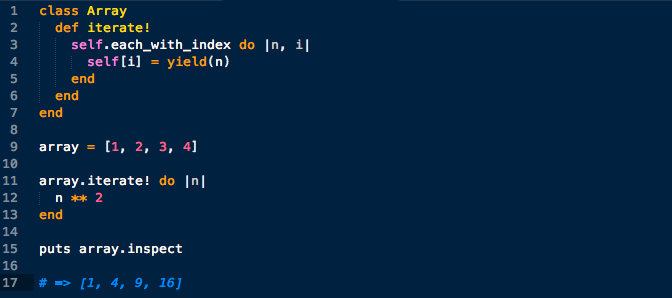
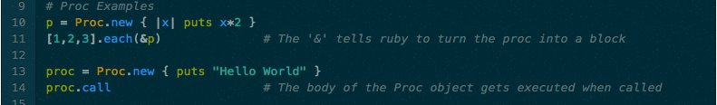
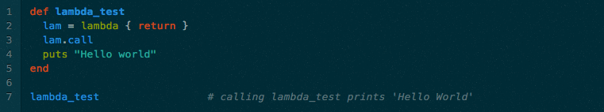
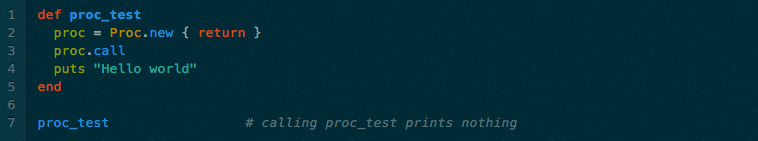

INTRODUCTION
Blocks, procs and lambdas are referred to as “closures” in computer science. As the title of this blog suggests, these particular features, or closures, are very powerful but, also, very misunderstood and many developers aren’t fully aware of the subtle differences between them. The gist of what these closures do is they allow a developer to pass code to a method and then execute that code later on.
BLOCKS: Object? I think not
Starting first with blocks, this is the type of code which is implicitly passed to a method using “do…end” or “{…}”. The general practice is to use the curly brackets for one line blocks and the do/end syntax for multiple line blocks. Here are some examples:  Blocks can't be used on a standalone basis though because they are not an object. They are used in methods to change, manipulate and a number of other things to various types of data structures and objects. Basically, its just part of the syntax of a method call. And at most, one block can be used in an argument list. An important, and some might say magical, component of a block is the use of the keyword “yield” which defers the calling methods execution to allow the block to be evaluated. If there is a result produced by the block, which there may not be, this result is evaluated by any remaining code in the method. Something else important to note is that yield can take parameters which are passed and evaluated within the block. LAYMAN EXPLANATION: Basically, you can use yield almost as a place holder and then input some block of code at a later time. Here's an example: [use example from first link below]  So you can set up a loop of some kind but not decide on what the code will specifically do but when you actually pass that new instance method to an object, you can add any type of block code (following the same components) as you’d like.
PROCS: Setting themselves apart from blocks
Proc, which is short for Procedure, is an object in ruby. These objects can have methods called on them and are part of the Proc class. Blocks are used in Procs. An interesting thing about Procs and parameters is that when you call them, they don't error out because you put the wrong number of arguments. When you have too few arguments you get nil, but when you have too many proc objects simply ignore the additional arguments.
LAMBDAS: A Different Kind of Proc
Lambdas are objects too and they are actually a very similar but slightly different form of a Proc. One of the most important differences is that lambdas care about the number of arguments being passed to them, while procs do not. What I mean by this is a lambda might have one argument that is supposed to be passed to it but if you give no arguments or more than one argument you'll get an error. Conversely, as I stated previously, procs don't care about the number of arguments used. See the example below:
 Another important difference is the use of the keyword 'return' within a proc and a lambda. When applying return inside a lambda, it will return the code right outside the lambda code. On the other hand, when applying return inside a proc, it will trigger the code outside the METHOD where the proc is being executed. This might be better explained by using some examples which are below:
Another important difference is the use of the keyword 'return' within a proc and a lambda. When applying return inside a lambda, it will return the code right outside the lambda code. On the other hand, when applying return inside a proc, it will trigger the code outside the METHOD where the proc is being executed. This might be better explained by using some examples which are below:


CONCLUSION
In conclusion, the primary purpose of these objects and functions is that they allow you to do group coding and to utilize more flexible methods which is ultimately an extrememly powerful tool in ruby. To summarize, here are some key points (1) Procs and Lambdas are objects, (2) Blocks are not objects, (3) Lambdas check the number of arguments but procs do not, (4) Lambdas use of the keyword return affects the code outside the lambda code, (5) Procs use of the keyword return affects the code outside the method and (5) Blocks use of yield is magical.